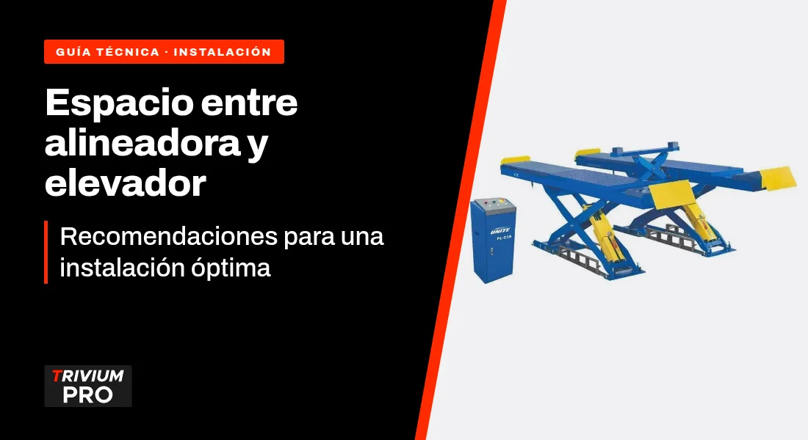

Cuando se instala un elevador de tijera o uno de 4 columnas en conjunto con una alineadora (como las Hofmann), respetar las distancias mínimas de trabajo no es un capricho: es clave para garantizar precisión en las mediciones y comodidad en el uso diario.
A continuación te explicamos por qué es importante y qué medidas debés considerar.
🔧 La importancia de una buena ubicación
Una mala disposición del elevador puede:
- Bloquear la visibilidad de las cámaras hacia las pantallas reflectivas.
- Generar errores en las lecturas de alineación.
- Complicar el ingreso y egreso del vehículo.
- Hacer incómodo o incluso inseguro el trabajo diario.
📐 Distancias mínimas recomendadas
Según el fabricante, el espacio de trabajo ideal entre el centro del elevador y las cámaras de alineación debe ser de 2.75 metros, siendo el mínimo 2.30 metros.
Esto permite que:
- Las cámaras tengan una línea de visión limpia hacia las pantallas ubicadas en las ruedas.
- El operador tenga espacio suficiente para desplazarse alrededor del vehículo.
- Se acomoden correctamente vehículos tanto livianos como utilitarios.
🛑 Consideraciones especiales para elevadores de 4 columnas
- No se recomiendan modelos de menos de 2.48 m (110”) entre columnas, ya que podrían bloquear la visión de las cámaras.
- Para vehículos más anchos (como camionetas con doble rueda trasera), se pueden requerir elevadores con mínimo 3.30 m (130”) entre columnas.
- Las pantallas reflectivas suelen sumar 0.86 m (34”) al ancho del vehículo, por lo tanto hay que tenerlo en cuenta para evitar interferencias.

📌 Recomendación final
Antes de instalar tu equipo, asegurate de medir bien el espacio y considerar tanto el tipo de vehículos que vas a atender como el modelo específico de alineadora. Desde Trivium Center te ayudamos a planificar cada detalle para que tu inversión rinda al máximo.